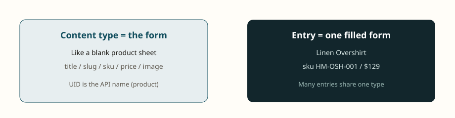

Start here — Contentstack in simple pictures
Time: 25 minutes
For: first-day testers who have never used a headless CMS
Read this page before Module 01. Each picture is one idea. Then open CMS screens (labeled) for official Contentstack UI with numbered fields.
---
1. What is Contentstack?
Contentstack is a headless CMS. That means:
- Editors type content in Contentstack (forms, not a finished website).
- The website is a separate app. It asks Contentstack for JSON and draws the page.

In the real CMS you open: your stack (project). Left menu: Entries, Assets, Releases, Settings.

---
2. QA checks three places, not one screen
If the homepage looks empty, do not stop at a screenshot of the site.
- CMS — is the entry saved, published, and are references filled?
- API — does staging JSON show the new values?
- Website — does the app map those fields after cache time?

---
3. Content type vs entry (form vs filled form)
- Content type = the blank form (
producthas title, slug, sku, price). - Entry = one product you filled in (Linen Overshirt).

In the real CMS: Content Models (the form) vs Entries (the data).


---
4. Save vs publish vs production
- Save = draft. Shoppers never see this.
- Publish to staging = QA can see it on the staging API and staging site.
- Publish to production = live. QA usually must not do this.


Always say: *I published version 4 to staging, en-us* — not “I published it.”
---
5. Three keys (tokens)
Think of tokens as door keys.

In the real CMS: Settings → Tokens. Create cda-staging and cda-production.

---
6. Languages: translate some fields, share others
- Translate: title, description.
- Do not translate: SKU, price, slug (unless the project says so).
- If German has no translation, the site can fall back to English.


---
7. Why a card is blank: missing include
A product points at a category. The API returns only an ID unless you ask it to include the category fields.


---
8. A campaign is a box of items (Release)
If you publish the landing page but forget the products or images, the hero or grid is empty. Put parents + children + assets in the same Release. Deploy staging first.


---
9. Preview is not the live site
Live Preview can show a draft. The Delivery API shows only published content. If QA signs off in Preview only, staging can still be old.

---
Remember these five sentences
- Contentstack stores content. The website draws it.
- Save ≠ publish. Staging ≠ production.
- Approved in workflow is not live.
- Delivery token proves what shoppers get.
- Empty module? Check unpublished reference, missing include, or cache.